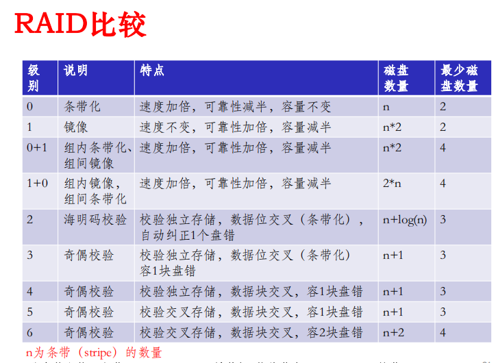

进程机制与并发程序设计
进程与线程的基本概念
并发与并行
并发：设有两个活动a1和a2，如果在某一指定的时间t，无论a1和a2是在同一处理机上还是在不同的处理机上执行，只要a1和a2都在执行中，则称a1和a2是并发执行的。
并行：两个程序在某一指定的时间t，同时运行在不同的处理机上。
并行性的确定-Bernstein条件：两个进程S1和S2可并发，当且仅当下列条件同时成立：
进程与程序
程序：静态的。静态的实体，是存放在磁盘上的可执行文件
进程：动态的。执行中的程序。进程包括程序和程序处理对象（数据集），是一个程序对某个数据集的执行过程，是分配资源的基本单位。通常把进程分为系统进程和用户进程两大类。进程的三个特征：并发、共享、不确定性。
作业：用户需要计算机完成的某项任务，是要求计算机所做工作的集合
进程的三个基本状态、转换条件
- 就绪状态：进程已获得除处理机外的所需资源，等待分配处理机资源；只要分配CPU就可执行；
- 执行状态：占用处理机资源；
- 阻塞状态：正在执行的进程由于发生某种事件而暂时无法执行，便放弃处理机处于暂停状态。
进程的控制原语
原语：由若干条指令所组成的指令序列，来实现某个特定的操作功能。
特点
- 指令序列执行是连续的，不可分割
- 是操作系统核心组成部分
- 必须在管态下执行，且常驻内存
和系统调用的区别：
原语是操作系统核心态下的原子性操作，强调原子性；系统调用是用户程序和操作系统的接口，为用户程序提供系统服务。原语常驻内存，必须在管态执行，而系统调用在用户态执行，对应的服务程序在内核态执行
创建原语：
fork,execFork()函数：
fork调用仅仅被调用一次，却能返回两次，它可能有三种不同的返回值：
- 在父进程中，fork返回新创建子进程的进程ID；
- 在子进程中，fork返回0；
- 如果出现错误，fork返回一个负值；
撤销原语：
kill
进程的组成：程序、数据、PCB
进程与线程的区别
进程是资源拥有者，线程是可执行单元。
进程拥有虚空间、进程映像、处理机保护、文件、I/O空间。
线程额外的资源：运行状态、保存上下文（程序计数器）、执行栈、资源共享机制。
线程的实现方式
用户级线程
线程在用户空间，不需要或仅需要极少的kernel支持。
上下文切换比较快。
用户级的线程库的主要功能：
- 创建和销毁线程
- 线程之间传递消息和数据
- 调度线程执行
- 保存和恢复线程上下文
优点
- 线程切换与内核无关
- 线程的调度由应用决定，容易进行优化
- 可运行在任何操作系统上，只需要线程库的支持
缺点
- 一个线程阻塞，所有相关的线程也会被内核阻塞。
- 阻塞发生在进程级别。内核只能将处理器分配给进程。即使有多个处理器，也无法实现一个进程中的多个线程的并发执行。
内核级线程
思想：kernel有好几个分身，一个分身可以处理一件事。
优点
- 内核可以在多个处理器上调度一个进程的多个线程实现同步并行执行
- 阻塞发生在线程级别
- 内核中的一些处理可以通过多线程实现
缺点
- 一个进程中的线程切换需要内核参与，线程的切换涉及到两个模式的切换（进程-进程、线程-线程）
- 降低效率
混合实现方式
线程在用户空间创建和管理。需要实现从用户空间的线程到内核空间线程（轻量级进程）的映射。
进程调度算法
调度的三个类型：高级、中级、低级
高级调度/宏观调度/作业调度
用户角度，一次提交若干个作业，对每个作业进行调度。
中级调度/内外存交换
存储器资源管理的角度，将进程的部分或全部换出到外存上，将当前所需部分换入到内存。
低级调度/微观调度/进程或线程调度
CPU资源管理的角度，执行的单位。
进程调度算法
总体上：非抢占、抢占
抢占即，就绪队列中一旦有优先级高于当前运行进程优先级的进程存在时，立即进行进程调度。
评价指标
–周转时间、平均周转时间、带权平均周转时间
- $周转时间=完成时刻-提交时刻$
- $带权周转时间=周转时间/服务时间(执行时间)$
- $平均周转时间=作业周转时间之和/作业数$
- $平均带权周转时间=作业带权周转时间之和/作业数$
–吞吐量
$吞吐量=作业数/总执行时间$，即单位时间CPU完成的作业数量
–响应时间
常见调度算法
先来先服务FCFS
最简单的调度算法，按先后顺序调度。非抢占式。
比较有利于长作业、CPU繁忙的作业。不适合短作业、I/O繁忙的作业。
短作业优先SJF
对FCFS的改进，目标：减少平均周转时间
对预计执行时间短的作业（进程）优先分派处理机。通常后来的短作业不抢占正在执行的作业。
优点：比FCFS改善平均周转时间和平均带权周转时间，缩短作业的等待时间。提高系统的吞吐量。
缺点：对长作业非常不利。未能依据作业的紧迫程度来划分执行的优先级；难以准确估计执行时间从而影响调度性能。
最短剩余时间优先SRTN
对SJF的改进，改进为抢占式。即一个新就绪的进程比当前运行进程具有更短的完成时间，系统抢占当前进程。
缺点：长任务饥饿。
最高响应比优先HRRN
FCFS和SJF的折中。非抢占式。既考虑作业的运行时间，也考虑作业的运行时间。既照顾短作业又不使长作业的等待时间过长。
计算后备作业队列中每个作业的响应比RP，然后选择其值最大的作业投入运行。RP值定义为：
$RP=(作业已等待时间+作业的服务时间)/作业的服务时间=1+作业已等待时间/作业的服务时间$
饥饿现象不会发生。但每次计算各道作业的响应比会有一定的时间开销。
时间片轮转算法
微观调度，目标：提高资源利用率。时间片过长会退化为FCFS算法。
算法流程：
§ 将系统中所有的就绪进程按照FCFS原则，排成一个队列。
§ 每次调度时将CPU分派给队首进程，让其执行一个时间片。时间片的长度从几个ms到几百ms。
§ 在一个时间片结束时，发生时钟中断。
§ 调度程序据此暂停当前进程的执行，将其送到就绪队列的末尾，并通过上下文切换执行当前的队首进程。
§ 进程可以未使用完一个时间片，就出让CPU（如阻塞）。
优先级调度
可分成抢先式和非抢先式。
- 静态优先级：创建进程时就确定，直到进程终止前都不改变。
- 动态优先级：在创建进程时赋予的优先级，在进程运行过程中可以自动改变。
- 优先级倒置（反转）：高优先级进程（或线程）被低优先级进程（或线程）延迟或阻塞。解决方法：
- 优先级置顶。当进程进入临界区后，其占用的处理机就不允许被抢占。
- 优先级继承。当高优先级进程要进入临界区使用临界资源X时，如果已经有一个低优先级进程正在使用该资源，则可以优先级继承。
多级反馈队列算法MFQ
时间片轮转算法和优先级算法的综合和发展。
实时调度算法
单调速率调度RMS
单处理器下的最优静态调度算法。可通过对系统资源利用率的计算来进行任务可调度性分析。实时调度的基础性理论。
任务的周期越小，其优先级越高。优先级最高的任务最先被调度。如果两个任务的优先级一样，当调度它们时，RM算法将随机选择一个调度。
最早截止时间优先算法EDF
任务的绝对截止时间越早，其优先级越高。
任务集可调度的充分必要条件：
$\sum_{i=1}^{n}\frac{C_i}{T_i}\leqslant1$
最低松弛度优先算法LLF
根据任务紧急的程度，来确定任务的优先级。任务的紧急度越高，其优先级越高，并使之优先执行。
$松弛度=任务截止时间-本身剩余运行时间-当前时间$
调度时机：有进程执行完或有进程的松弛度（Laxity）为0时
任务集可调度的充分必要条件：
$\sum_{i=1}^{n}\frac{C_i}{T_i}\leqslant1$
多处理机调度
系统
- 非对称式多处理系统（AMP）
- 对称式多处理系统（SMP）
- 自调度：所有CPU采用一个公共就绪队列。各个处理机自行在就绪队列中取任务。
调度
- 自调度
- 成组调度
- 专用处理机调度
进程通信
类型
低级通信
只能传递状态和整数值，包括进程互斥和同步所采用的信号量和管程机制。
缺点：传送信息量小、编程复杂。
高级通信
- 管道
- 无名管道（Pipe）：
- 半双工，数据只能向一个方向流动；需要双方通信时，需要建立起两个管道；
- 只能用于父子进程或兄弟进程之间（具有亲缘关系的进程）；
- 单独构成一种独立的文件系统，只存在内存中；
- 数据的读出和写入：一个进程向管道中写的内容被管道另一端的进程读出。写入的内容每次都添加在管道缓冲区的末尾，并且每次都是从缓冲区的头部读出数据。
- 有名管道（Named Pipe或FIFO）
- 可以用于能够访问FIFO路径的进程以及FIFO的创建进程之间。因此通过FIFO不相关的进程也能交换数据；
- 严格遵循先进先出，数据的读出和写入同无名管道。
- 无名管道（Pipe）：
- 共享内存
- 最有用的进程间通信方式，也是最快的IPC形式（原因：避免了其他形式的IPC必须执行的开销巨大的缓冲复制）
- 两个不同进程A、B共享内存的意义是，同一块物理内存被映射到进程A、B各自的进程地址空间。
- 当多个进程共享同一块内存区域，由于共享内存可以同时读但不能同时写
- 消息系统
- 消息传递：两个通信原语（
send,receive） - 调用方式：阻塞调用、非阻塞调用
- 消息传递：两个通信原语（
临界资源、临界区
临界资源：一次仅允许一个进程访问的资源；
临界区：每个进程中访问临界资源的那段代码；
同步、互斥
互斥：某一资源同时只允许一个访问者对其进行访问，具有唯一性和排他性。访问是无需访问。（间接制约关系）
同步：在互斥的基础上，通过其他机制实现访问者对资源的有序访问。（直接制约关系）
原则
- 空闲让进
- 忙则等待
- 有限等待
- 让权等待
经典问题
全面练习：孙海龙-13-4.2-进程管理-同步与互斥.ppt
生产者-消费者
若干进程通过有限的共享缓冲区交换数据。
读者-写者
哲学家就餐
- 破除资源互斥：至多只允许四个哲学家同时进餐，以保证至少有一个哲学家能够进餐，最终总会释放他所使用的两支筷子。
- 破除循环等待：对筷子进行编号，每个哲学家按编号从低到高拿起筷子；或对哲学家编号，奇数先左后右，偶数相反。
- 破除请求且保持：同时拿起两根筷子，否则不拿起。
理发师
信号量、PV操作
信号量是一类特殊的变量，程序对其访问都是原子操作，且只允许对它进行P和V操作。
当信号量为正时，表示资源的个数；
当信号量为负时，表示等待进程的个数。
优缺点
- 优点：简单，而且表达能力强（用PV操作可解决任何同步互斥问题）。
- 缺点：不够安全；PV操作使用不当会出现死锁；遇到复杂同步互斥问题时实现复杂。
1 | // P操作 |
实现汇合（Rendezvous）
目的：a1永远在b2之前，而b1永远在a2之前。
1 | semaphore aArrived = 0, bArrived = 0; |
屏障Barriers
信号量集机制
▪ SP(S, d, d)：表示每次申请d个资源，当资源数量少于d个时，便不予分配。
▪ SP(S, 1, 1)：表示互斥信号量。
▪ SP(S, 1, 0)：可作为一个可控开关(当S≥1时，允许多个进程进入临界区；当S=0时禁止任何进程进入临界区)。
管程的基本概念
是在程序设计语言中引入的一个成分是一种高级同步机制。
管程定义了一个数据结构和能为并发进程所执行（在该数据结构上）的一组操作，这组操作能同步进程和改变管程中的数据。需要解决三个问题：互斥、同步、条件变量。
条件变量和信号量的区别

死锁问题
基本概念：死锁、活锁、饥饿
死锁：一组进程中，每个进程都无限等待组内其他进程所占有的资源，在无外力介入的条件下，将因永远分配不道德资源而无法运行的现象。浪费大量系统资源，甚至导致系统崩溃。发生原因：资源竞争、并发执行的顺序不当。
活锁：任务或执行者没有被阻塞，由于某些条件没有满足，导致一直重复尝试，失败。活锁在不断地改变状态，且有可能自行解开。
饥饿：某些进程可能由于资源分配策略的不公平导致长时间等待。
产生死锁的必要条件
- 互斥：允许进程同时访问某些资源。
- 不可剥夺：允许进程强行从占有者那里夺取资源。
- 请求和保持：实现资源预先分配。只有当系统能够满足当前进程的全部资源需求时，才一次性将所申请的资源全部分配给该进程，否则不分配任何进程。
- 循环等待：把资源实现分类编号，按号分配。
进程-资源图/资源分配图
会考
处理死锁的方法
允许死锁发生：无作为、检测与解除死锁
不允许死锁发生：预防死锁、避免死锁
预防死锁（静态）：破坏死锁产生的四个条件
避免死锁（动态）：在资源分配之前进行判断。安全性、银行家算法
安全序列：一个序列${P_1,P_2,…,P_n}$安全，指若对于每一个进程$P_i$,它需要的资源可以被系统中当前可用资源加上所有进程$P_j(j<i)$当前占有资源之和所满足。则这是一个安全序列。如果系统不存在这样一个安全序列，则系统是不安全的。系统进入不安全状态也未必产生死锁。产生死锁后，系统一定处于不安全状态。
银行家算法
检测与解除死锁：
- 发现死锁：基于进程-资源图的化简
- 资源分配图中存在环路，不一定存在死锁。
- 死锁定理：系统中某个时刻t为死锁状态的充要条件是t时刻系统的资源分配图是不可完全化简的
- 在经过一系列的简化后，若能消去图中的所有边，使所有的进程都成为孤立结点，则称该图是可完全化简的；反之的是不可完全化简的。
- 解除死锁：资源剥夺、撤销进程
- 剥夺资源：挂起一些进程，剥夺其资源以接触死锁，待条件满足时再激活。
- 撤销进程：使全部死锁的进程夭折。
- 无所作为：鸵鸟算法
- 发现死锁：基于进程-资源图的化简
输入/输出系统
I/O设备及控制
I/O设备管理具体包括：
- 逻辑I/O：完成设备无关的操作，如设备分配、设备回收、数据准备等。
- 设备驱动程序：负责对设备控制器进行控制（通过读写其中的寄存器）。
- 中断服务程序：设备工作结束后负责向CPU发中断信号，中断服务程序完成相应处理。
I/O设备
按数据组织分类：
- 块设备：以数据块为单位存储、传输信息。传输速率较高、可寻址（随机读写）。
- 字符设备：以字符为单位存储、传输信息。传输速率低、不可寻址。
按用途分类：
- 存储设备：磁盘、磁带；
- 传输设备：网卡、Modem；
- 人机交互设备：显示器、键盘、鼠标。
从资源分配角度：
- 独占设备：如打印机，磁带机
- 共享设备：如硬盘
- 虚设备
I/O控制技术（比较异同）
程序控制/轮询/查询方式IO：由CPU代表进程向I/O模块发出指令，然后进入忙等状态，直到操作完成之后进程才能够继续执行。
中断驱动：当I/O操作结束后由设备控制器主动地来通知设备驱动程序，而不是依靠设备驱动程序不断地去轮询看看设备的状态。
直接内存访问（DMA）：由一个专门的控制器来完成数据从内存到设备或者是从设备到内存的传输工作。
通道技术（Channel）：与DMA原理几乎一样。通道是一个特殊功能的处理器，它有自己的指令和程序专门负责数据输入输出的传输控制。CPU将“传输控制”的功能下放给通道后只负责“数据处理”功能。这样，通道与CPU分时使用内存，实现了CPU内部运算与I/O设备的并行工作。
I/O软件的组成与分层设计
SPOOLing技术/假脱机技术
可把独享设备转变成具有共享特征的虚拟设备，从而提高设备利用率。
组成：
- 输入井和输出井
- 输入缓冲区和输出缓冲区
- 输入进程$SP{i}$和输出进程$SP{o}$
特点：
- 高速虚拟I/O操作
- 实现对独享设备的共享
缓冲区的管理
缓冲区作用
可提高外设利用率。
原因：
- 匹配CPU与外设的不同处理速度。
- 减少对CPU的中断次数。
- 提高CPU和I/O设备之间的并行性。
设从磁盘把一块数据输入到缓冲区的时间为T，操作系统将该缓冲区中的数据传送到用户区的时间为M，而CPU对这一块数据处理的时间为C。
单缓冲区
由于T和C是可并行的，当T>C时，系统对每一块数据的处理时间为M+T，反之则为M+C。处理时间表示为$Max(C,T)+M$。
双缓冲区
在设备输入时，先将数据送入第一缓冲区，装满后便转向第二缓冲区。此时操作系统可以从第一缓冲区中移出数据，并送入用户进程(如下图)。接着由 CPU 对数据进行计算。在双缓冲时，系统处理一块数据的时间可以粗略地认为是$Max(C，T)$。如果 C
环形缓冲区
对于用作输入的循环缓冲，通常是提供给输入进程或计算进程使用，输入进程不断向空缓冲去输入数据，而计算进程则从中提取数据进行计算。
循环缓冲区的组成如下
• 多个缓冲区，在循环缓冲区中包括多个缓冲区，每个缓冲区的大小相同，作为输入的多缓冲区可分为三种类型，用于装输入数据的空缓冲区R、已装满数据的缓冲区G以及计算进程正在使用的工作缓冲区C。
• 多个指针，作为输入的缓冲区可设置三个指针，用于指示计算进程下一个可用缓冲区G的指针Nextg、指示输入进程下次可用的空缓冲区R的指针Nexti、以及用于指示计算进程正在使用的缓冲区C的指针Current
缓冲池
上述仅使用于某特定的I/O进程和计算进程，因而它们属于专用缓冲。
当系统较大时，将会有许多这样的循环缓冲，将消耗大量内存空间且利用率不高。
共用缓冲池，包含三种类型的缓冲区：
- 空缓冲区
- 装满输入数据的缓冲区
- 装满输出数据的缓冲区
I/O管理软件
磁盘存储管理
磁盘的工作原理
磁盘空间的管理
– 空闲表、空闲链表、位示图、成组链接
磁盘访问时间
– 寻道时间 + 旋转延迟时间 + 传输时间
$T_a=T_s＋1/(2r)＋ b/(rN)$
$r:转速(r/s)$, $b:每次所读/写的字节数$, $N:磁道上的字节数$
磁盘调度算法
先来先服务FCFS
最短寻道时间优先SSTF
扫描算法SCAN

循环扫描算法C-SCAN
| 优点 | 缺点 | |
|---|---|---|
| FCFS | 公平、简单 | 平均寻道距离大，仅应用在磁盘I/O较少的场合 |
| SSTF | 性能比FCFS好 | 不能保证平均寻道时间最短，可能出现“饥饿”现象 |
| SCAN | 寻道性能好，可能避免“饥饿”现象 | 不利于远离磁头一端的访问请求 |
| C-SCAN | 消除了对两端磁道请求的不公平 | - |
提高I/O速度的主要途径
- 选择性能好的磁盘
- 并行化
- 采用适当的调度算法
- 设置磁盘高速缓冲区
- 缓存形式
- 独立缓存（固定大小）
- 以虚拟内存为缓存（弹性大小）
- 数据交付
- 直接交付（copy开销）
- 指针交付（内存管理复杂）
- 置换算法：LRU
- 周期性写回：disk cache->磁盘
- 缓存形式
廉价冗余磁盘阵列: RAID
笔者真没能想到最后一题选择考了这个，还仔细地考了每个级别的特殊之处。
- 利用冗余技术提高可靠性
- 利用并行提高性能
定义：把多种独立的硬盘（物理硬盘）按照不同方式组合起来形成一个硬盘组（逻辑硬盘），从而提供比单个硬盘更高的存储性能和提供数据冗余的技术。
组成磁盘阵列的不同方式：RAID级别。
数据冗余的功能是在用户数据一旦发生损坏后，利用冗余信息可以使损失数据得以恢复，从而保障了用户数据的安全性。
优点
- 成本低，功耗小，传输速率高
• RAID比起传统的大直径磁盘驱动器来，在同样的容量下，价格要低许多。
• RAID让很多磁盘驱动器并行传输数据比单个磁盘驱动器提高几倍、几十倍甚至上百倍的速率。有效缓解了快速的CPU与慢速的磁盘之间的矛盾
- 可提供容错功能
• 普通磁盘驱动器只能通过CRC(循环冗余校验)码提供简单的容错，RAID建立在每个磁盘驱动器的硬件容错功能之上，可提供更高的可靠性
RAID分级
主流的RAID有7个级别。

文件系统
基本概念
文件的概念
一组带标识的、在逻辑上有完整意义的信息项的序列。实际上是一组字节序列：一切皆文件。文件包括两部分：
- 文件体：文件本身的内容；
- 文件说明：文件存储和管理的相关信息。
文件的形式
- 以字节为单位的流式结构
- 记录性文件结构
- 树形结构
目录的概念
由文件说明索引组成的用于文件检索的特殊文件。内容主要是文件访问和控制的信息（不包括文件内容）。
文件系统的功能
目录的作用、内容、结构
根据用户给出的ASCII形式的文件名（路径名），迅速地定位到相应的文件控制块。
不同的系统采用不同的实现方法，一般分为两类：
§ 直接法：目录项＝文件名＋文件控制块（属性信息、在外存上的存放位置）。如MS-DOS/Windows；
§ 间接法：目录项＝文件名＋文件控制块的地址（索引号）。如Unix（inode）；
文件系统实现技术
文件控制块
基本信息
- 文件名
- 物理位置
- 文件逻辑结构：有/无结构（记录文件，流式文件）
- 文件物理结构：如顺序，索引等
访问控制信息
- 文件所有者（属主）
- 访问权限
- 使用信息
- 创建时间，上一次修改时间，当前使用信息等。
文件的逻辑结构：记录、流式
文件的物理结构
连续文件
容易出现磁盘碎片，适合变化不大的文件
§ 优点：
§ 结构简单，实现容易，不需要额外的空间开销
§ 顺序存取和随机存取的效率高
§ 缺点：
§ 文件长度一经固定便不易改变；
§ 不利于文件的动态增加和修改；
串联文件
§ 优点：
§ 空间利用率高；能较好的利用外存空间；
§ 文件动态扩充和修改容易；
§ 顺序存取效率高；类似于存储管理中的页式
§ 缺点：
§ 随机存取效率太低，如果访问文件的最后的内容，实际
上是要访问整个文件。
§ 可靠性问题，如指针出错;
§ 链接指针占用一定的空间。
索引文件：一级索引、多级索引
§ 一个文件的信息存放在若干个不连续物理块中
§ 系统为每个文件建立一个专用数据结构：索引表，并将这些物理块的块号存放在该索引中。
§ 索引表就是磁盘块地址数组，其中第i个条目指向文件的第i块。
文件的共享、保护、保密
保护文件的方法
- 建立副本
- 优点：方法简单
- 缺点：设备费用和系统开销增大
- 适用于短小且极为重要的文件
- 定时转储
- 规定文件的权限
性能问题
§ 磁盘服务：速度成为系统性能的主要瓶颈之一。因此，在设计文件系统时应尽可能减少磁盘访问次数。
§ 提高文件系统性能的方法：目录项分解、当前目录、磁盘碎片整理、块高速缓存、磁盘调度、提前读取、合理分配磁盘空间、数据的优化分布、RAID技术等。

...
...
This is copyright.